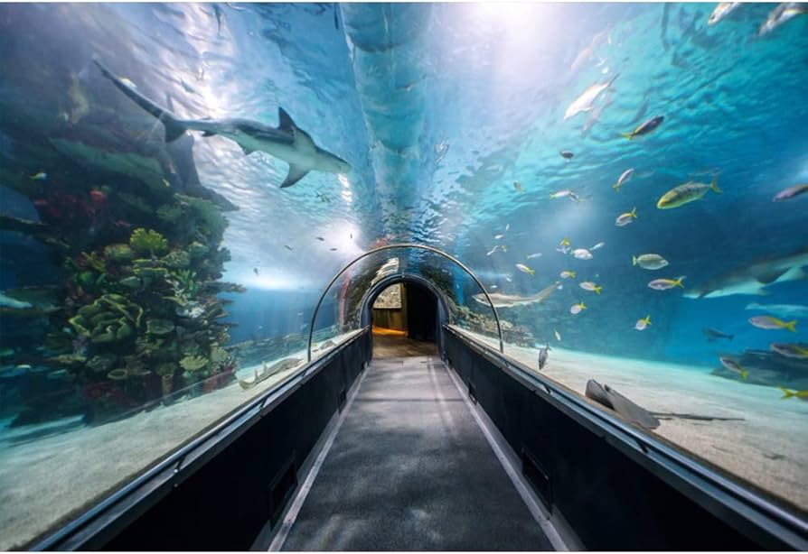
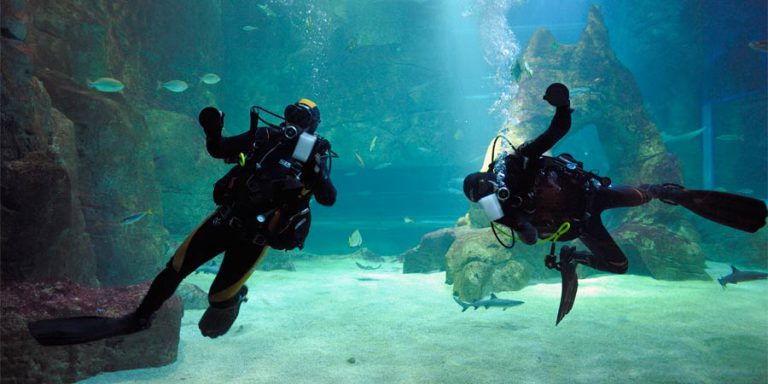

Una maravilla marina
Acuario Crystal es un destino mágico donde la vida marina se encuentra con la innovación para ofrecer una experiencia inolvidable. Este acuario, ubicado en un moderno edificio de cristal con vistas panorámicas, alberga más de 300 especies acuáticas de todo el mundo.
Con un ambiente familiar y una cafetería con vista al acuario, este lugar invita a vivir una aventura que inspira a todos a cuidar y proteger la vida marina.
Nuestras atracciones principales
TÚNEL DE CRISTAL
Sumérgete en el corazón del océano mientras caminas a través del impresionante Túnel de Cristal. Este túnel transparente te permite experimentar cómo es estar rodeado de vida marina, mientras los tiburones, rayas y bancos de peces nadan a tu alrededor. ¡Observa de cerca cómo estos majestuosos animales interactúan en su entorno natural!

ACUARIO NOCTURNO
Descubre el lado misterioso de los océanos con el Acuario Nocturno. Durante la noche, las luces se atenúan y las criaturas nocturnas emergen para crear un espectáculo fascinante. Puedes explorar el acuario bajo una iluminación especial que resalta los colores bioluminiscentes y observar cómo se comportan los animales cuando el entorno está más tranquilo y oscuro.
TRAS BAMBALINAS
¿Alguna vez te has preguntado cómo se mantiene un acuario en funcionamiento? Únete a nuestro recorrido Tras Bambalinas y descubre los secretos del funcionamiento diario del acuario. En este tour exclusivo, podrás ver las áreas donde se cuida a los animales, cómo se preparan los alimentos y los sistemas de filtración que mantienen los hábitats limpios y seguros.

ALIMENTACIÓN DE RAYAS
Participa en la emocionante experiencia de la Alimentación de Rayas. Bajo la supervisión de nuestro personal experto, podrás alimentar y tocar a estas increíbles criaturas. Aprende sobre su hábitat, comportamiento y la importancia de su conservación mientras interactúas de cerca con ellas.
¡El favorito de las personas!
"Una experiencia fascinante. Los tanques están impecables y la vida marina es espectacular."
"Ideal para toda la familia. Gran variedad de especies y ambiente muy relajante."
"Sorprendente acuario. Los túneles con tiburones son impresionantes. ¡Recomendado para niños!"